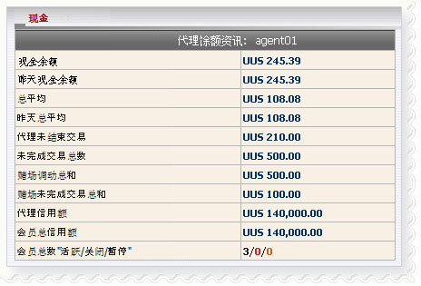

余额
定义:
这是总报告，帮助代理商以及与他/她目前余额输赢数额，支付或收取数额.

余额
用词注解:
-
现金余额: 目前总代理输赢金额，包括转帐交易.
- 昨天现金余额: 总代理输赢数额至昨日.
- 总余额: 总代理输赢数额至昨日.
- 昨天总余额: 总支付或收取的总金额，代理需要解决与上线至昨日.
- 代理未结束交易: 总代理的会员金额从他/她的占成正在进行/等待注单.
- 未完成交易总数: 总会员金额正在进行/ 等待注单。
- 总娱乐城转帐: 总额转移体育博彩至 娱乐场通过会员。
- 总娱乐场未完成交易: 总会员金额对未完成娱乐游戏.
- 代理信用额: 金额给予代理通过上线.
- 会员总信用额: 总金额给予会员.
- 会员总数 “活跃/ 关闭/ 暂停“: 会员数目是"活跃/ 关闭/ 暂停“.
如何理解报告:
- 现金余额 = 245.39 是指目前代理赢 245.39
- 昨天现金余额 = 245.39 是指至昨日代理赢
245.39
- 总余额 = 108.08 指代理将收到上线的 108.08
- 昨天总余额 =108.08 是指昨日代理将收上线 108.08
- 代理未结束交易 = 210 是指代理可能会收到的最大 210从全部进行/ 等待注单。
- 未完成交易总数 = 500 是指目前总会员金额在进行/等待注单是 500.
- 总娱乐城转帐 = 500 是指会员转帐从体育博彩至娱乐城500总额。
- 总娱乐场未完成交易 =
100 是指会员留100在未完成娱乐游戏.
- 代理信用额 = 140,000 是指最初代理给予140,000通过上线.
- 会员总信用额 = 140,000 是指代理总额给予所有会员.
- 会员总数 “活跃/ 关闭/ 暂停“ = 3/0/0 是指代理有3 活跃/ 0 关闭 / 0 关闭的 会员 。